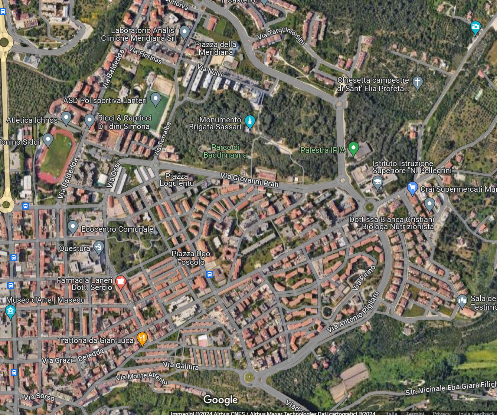

Quartieri di Sassari
Esplora i quartieri della città, ognuno con la propria identità unica e i propri punti di interesse.

Centro Storico
Il cuore pulsante della città, con monumenti, piazze, e una storia che affonda le radici nel passato.
Scopri di più

Monte Rosello
Un quartiere dinamico, ricco di aree verdi e spazi dedicati alle famiglie.
Scopri di più
Latte Dolce
Con una forte identità locale, Latte Dolce è il luogo perfetto per scoprire il calore della comunità sassarese.
Scopri di più